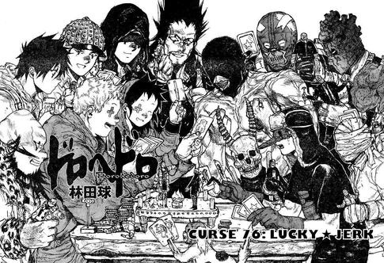

Home
Welcome to Dorohedoro fan-page!
This is a fan-page about the manga named Dorohedoro, written by Q Hayashida.
Characters
About
In a dark and gritty city known as the "Hole," a place where magic and science clash in a chaotic blend, a man named Caiman wakes up with no memory of his past and a reptilian head. With no clue about how he came to be this way, he embarks on a quest to uncover his true identity and to find the sorcerer responsible for his transformation.
Caiman’s search for answers leads him to cross paths with various residents of the Hole, including other sorcerers who use their magical abilities for various, often nefarious purposes. Alongside his companion Nikaido, who owns a mysterious restaurant and harbors her own secrets, Caiman navigates the dangers of the Hole, unraveling dark conspiracies and uncovering hidden truths about his past and the strange world he inhabits.
"Dorohedoro" is renowned for its unique blend of dark fantasy, horror, and comedy, set in a vividly imagined universe with intricate world-building. Its narrative is filled with bizarre characters, complex storylines, and intense action sequences, creating a gripping and immersive experience for readers.